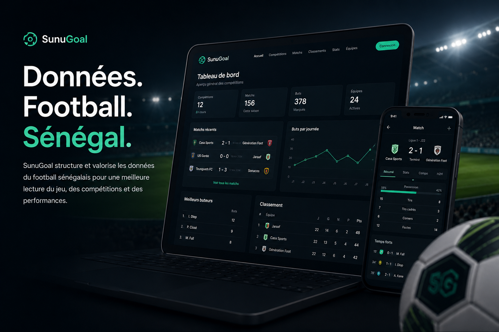

Structuration
Organisation progressive de données sportives autour des compétitions, rencontres et statistiques associées.

Une plateforme dédiée à la structuration, à l’analyse et à la valorisation de données sportives africaines : performances, tendances, indicateurs et visualisations.
Un outil de lecture et d’analyse du sport africain.

Le football génère une grande quantité d’informations chaque saison, mais les données associées aux compétitions locales restent souvent fragmentées, difficilement accessibles ou peu structurées.
SunuGoal s’inscrit dans une démarche progressive visant à organiser, contextualiser et valoriser certaines données sportives autour des compétitions, des statistiques et des performances afin de faciliter leur consultation et leur exploitation.
Une vue synthétique pour comprendre les grandes lignes du projet.
Organisation progressive de données sportives autour des compétitions, rencontres et statistiques associées.
Valorisation d’informations liées au football local dans une logique de continuité et d’accessibilité.
Développement d’outils et d’interfaces destinés à faciliter la lecture et l’analyse des données.
Intégration et structuration des informations au fil des collectes et des enrichissements disponibles.
Le projet a vocation à évoluer progressivement à travers l’enrichissement des données structurées, le développement d’outils de visualisation complémentaires et la mise en place d’interfaces facilitant la consultation des informations disponibles.
À terme, SunuGoal ambitionne de contribuer à une meilleure accessibilité des données sportives locales à travers une approche simple, structurée et orientée usages.
Consultez la plateforme et découvrez les projets développés au sein de l’écosystème M221Tech.